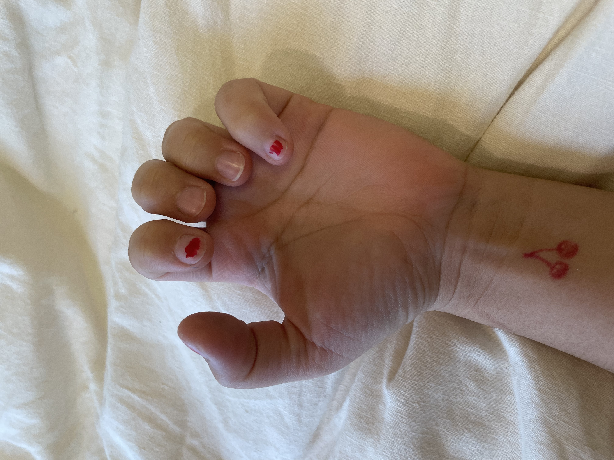

last experienced: 02.15.2021
I bite my nails often, because I’m a worrier and overthinker. While I have tried to stop, nothing beats the sensation of biting my nails. It’s like biting very thin plastic, it isn’t weak but is still flexible. It’s almost gratifying when I break through my nail because I feel that I have “worked” to trim them. Once I chip my nail by biting it, I usually grab the rest of the nail and rip it off.When I trim my nails, I miss out on the feeling of satisfaction when I break through my nail.